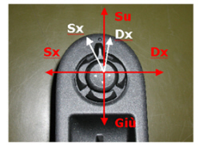

7005RA CHECK THE OPERATION OF THE DOOR MIRROR ADJUSTMENT CONTROL
- Path
- Test > 70 FITTINGS > 7005 PASSENGER COMPARTMENT FRONT SIDE DOORS > 7005R FRONT DOOR MIRRORS > 7005RA CHECK THE OPERATION OF THE DOOR MIRROR ADJUSTMENT CONTROL
- Kind
- test / check procedure
- Applies to
- all engines; all production periods
- Interactive page
- https://sloeber94.github.io/elrnDB-aBrrSpdr/en/#/946001141
Applies to: all engines; all production periods
Left/right mirror selection and left/right/up/down mirror adjustment test.
1. Remove the control panel following the [PR_7005R40] on the driver's door and disconnect the connector.
2. Position the probes of an ohmmeter betwen pins 1 and 7 on the joystick connector and check for the following resistance values for both LH and RH mirror selections
3. Position the probes of an ohmmeter betwen pins 4 and 7 on the joystick connector and check for the following resistance values for both LH and RH mirror selections
4. Position the probes of an ohmmeter betwen pins 3 and 7 on the joystick connector and check for the following resistance values for the vertical up and down selection
MOVEMENT | RESISTANCE VALUE | CONNECTOR PIN |
|---|---|---|
Left mirror selection | 218 Ohm 10% | 1 and 7 |
Right mirror selection | 770 Ohm 10% | 1 and 7 |
Left horizontal | 780 Ohm 10% | 4 and 7 |
Right horizontal | 230 Ohm 10% | 4 and 7 |
Vertical Up | 786 Ohm 10% | 3 and 7 |
Vertical Down | 230 Ohm 10% | 3 and 7 |
